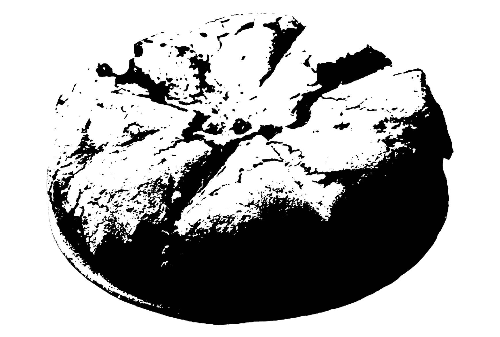
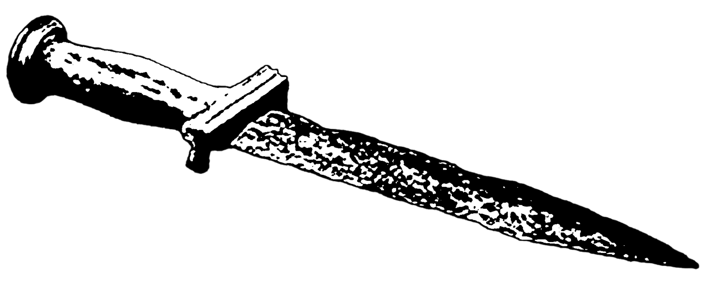
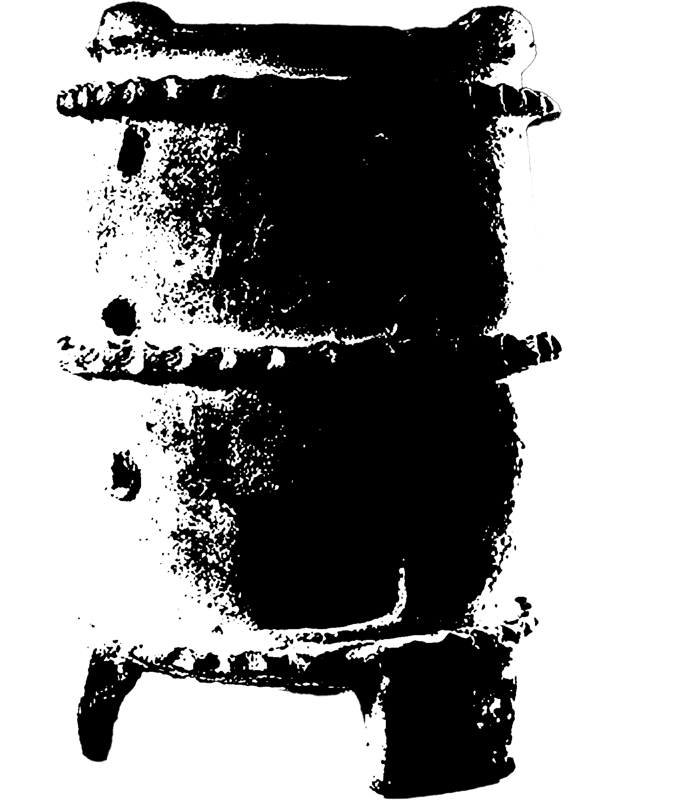
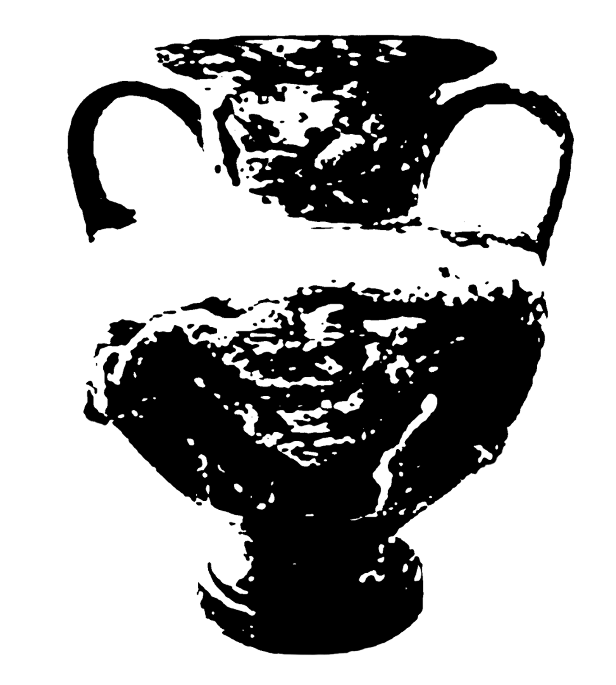

1. Pompeii was destroyed and buried under 4 to 6 meters of volcanic ash and pumice after the catastrophic eruption of Mount Vesuvius. The city was abandoned, and its existence was largely forgotten in the following centuries.

2. In the 16th century, there were sporadic findings of ancient remains. During the construction of an underground canal in 1599, architect Domenico Fontana discovered some ancient walls with frescoes. However, the excavation was quickly covered up and forgotten.
3. Pompeii was rediscovered in the 18th century. In 1738, workers found the nearby town of Herculaneum while building a palace for King Charles III of Spain. This sparked interest in ancient Roman cities. In 1748, a farmer uncovered ancient buildings in his vineyard, leading to formal excavations of Pompeii. Early digs, led by Rocque Joaquin de Alcubierre, focused on finding treasures rather than preserving the site, causing some damage.

4. In the 19th century, archaeologist Giuseppe Fiorelli began more careful excavations. He is known for making plaster casts of the bodies of victims, showing their final moments. His work helped reveal Pompeii’s streets, houses, and daily life.

5. Even today, new discoveries are made in Pompeii. Modern techniques like laser scanning and DNA analysis continue to provide insight into ancient Roman life. The city, preserved by volcanic ash, offers a detailed glimpse into the past.